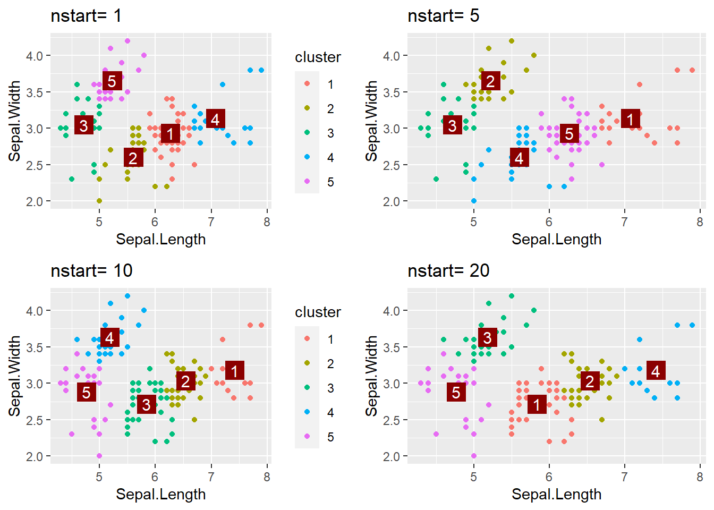

Les arguments obligatoires dans la fonction kmeans:
x: le jeu de données sur lequel on souhaite réaliser l’algorithme
centers: représente le nombre de clusters que l’on souhaite représenter lors de la construction de l’algorithme
3: clustering
Voir le code
clust <-kmeans(X,3)data <-data.frame(X,y)data$cluster<-factor(clust$cluster)ggplot(data, aes(x = Sepal.Length, y = Sepal.Width, color = cluster)) +geom_point() +geom_point(data =data.frame(clust$centers), aes(x = Sepal.Length, y = Sepal.Width), color ="darkred",size =6,shape=15)+geom_text(data =data.frame(clust$centers),aes(x = Sepal.Length, y = Sepal.Width),label =1:3,color ="white", size =4) +theme_light()
4:nstart
L’argument nstart permet de spécifier le nombre de fois que l’algorithme va itérer avec différentes initialisations aléatoires des centroïdes.
Il permet donc avec une valeur plus élevé d’optimiser l’algorithme des kmeans en réduisant l’impact de l’aléa du choix d’initialisation de nos centroïdes.
Exemple avec k=5:
Voir le code
for(i inc(1,5,10,20)){ clust <-kmeans(X,5,nstart = i) data$cluster<-factor(clust$cluster) fig <-ggplot(data, aes(x = Sepal.Length, y = Sepal.Width, color = cluster)) +geom_point() +geom_point(data =data.frame(clust$centers), aes(x = Sepal.Length, y = Sepal.Width), color ="darkred",size =6,shape=15)+geom_text(data =data.frame(clust$centers),aes(x = Sepal.Length, y = Sepal.Width),label =1:5,color ="white", size =4) +labs(title =paste("nstart=",i) )theme_light()if(i ==5| i ==20) { fig <- fig +guides(color =FALSE) }assign(paste0("fig", i), fig)}grid.arrange(fig1, fig5, fig10, fig20, ncol =2)

On peut voir qu’avec une seule itération, les clusters sont totalements différents qu’avec 5,10 et 20 itérations.
Cela est dû comme expliqué précedemment au choix aléatoire des centroïdes à l’initialisation de l’algorithme. Entre 10 et 20 itérations, on peut observer des clusters quasiment à l’identique preuve que cela à permis de réduire cet aléa.
On peut lier cet argument à iter.max qui permet de spécifier le nombre d’itération de chaque algorithme lancé avant l’arrêt de celui-çi.
5: critère de qualité de clustering
Le critère le plus connu permettant de juger la qualité d’un clustering est l’inertie. L’inertie mesure la dispersion des points de données par rapport à leurs centres de cluster. Plus l’inertie est faible, plus les clusters sont compacts et mieux le clustering est considéré. Autrement dit l’objectif est de minimiser la variance intra-cluster et maximiser la variance inter-cluster.
Deux autres scores peuvent être intéréssant à utiliser:
le score silhouette: \[
s_i=\frac{b_i-a_i}{max(b_i-a_i)}\\
\]
Où \(a_i\) est la distance moyenne du point avec tout les autres points dans le même cluster et où \(b_i\) est la distance moyenne du point considéré avec tout les points du cluster le plus proche.
- le score gap statistic qui utilise l’inertie et la compare à celles correspondants à des ensembles de données aléatoires. Il s’agit de la différence entre la valeur de l’inertie observée pour le clustering réel et la valeur moyenne de l’inertie pour les ensembles de données aléatoires. Plus cette différence est grande, plus le nombre de clusters est jugé approprié.
On voit qu’avec la technique du coude pour l’inertie et l’optimisation du gap_stat, on retrouve le même nombre de clusters optimaux: 3.
En revanche le score silhouette donne une légère préférence pour deux clusters.
Le choix de 3 clusters est plus que raisonnable pour la simple et bonne raison que notre jeu de données concerne 3 variétés de plantes différentes.
6 Taux d’agréement
Voir le code
clust <-kmeans(X,centers =3,nstart =10)data$cluster <-as.character(clust$cluster)cont <-table(data$y,data$cluster)kable(cont)# Définir une palette de couleurs pour la variable y (catégorie)colors <-c("setosa"="darkred","versicolor"="darkorange","virginica"="steelblue")# Visualisation des clusters avec fviz_clusterfviz_cluster(object = clust, X, geom ="point", stand =FALSE, show.clust.cent =FALSE, shape =16,ellipse.alpha =0.2)+# Ajout des points colorés par ygeom_point(data = data, aes(x = Sepal.Length, y = Sepal.Width, color =factor(y)),shape=16) +# Suppression de la légende pour les clustersscale_color_discrete(guide ="none") +scale_color_manual(values = colors)+# titrelabs(title ="kmeans 3 clusters avec taux d'agréement" )
1
2
3
setosa
46
0
0
versicolor
0
34
12
virginica
0
14
32
On peut voir sur ce graphique que le cluster1 représente parfaitement les setosa tandis que pour les deux autres clusters l’algorithme a eu plus de mal à les dissocier.
7: Introduction de nouvelles données
Voir le code
new_clust <-kmeans(rbind(X, X.test), 3,nstart =10)f1 <-fviz_cluster(object = clust, X, geom ="point", stand =FALSE, show.clust.cent =FALSE, shape =16,ellipse.alpha =0.2)+geom_point(data=data.frame(X.test),aes(x = Sepal.Length, y = Sepal.Width),shape=16)+labs(title="Visualisation des nouveaux points" )f2 <-fviz_cluster(object = new_clust, rbind(X,X.test), geom ="point", stand =FALSE, show.clust.cent =FALSE, shape =16,ellipse.alpha =0.2)+geom_point(data=data.frame(X.test),aes(x = Sepal.Length, y = Sepal.Width),shape=16)+labs(title="Insertion des nouveaux points dans les clusters" )f1/f2
Exercice 2 : Clustering et formes
Chargement des jeux de donées
Aggregation
CAH
AU vu du jeu de données on choisis k=7 clusters.
On commence par utiliser la classification ascendante hiérachique pour tenter de discriminer les points en fonction des clusters attendus.
Pour ce qui est des paramètres, après une pré-séléction intuituive et de l’essai-erreur, on choisis de garder la distance euclidienne et d’utiliser la méthode de Ward pour la production du dendogramme.
Nous obtenons les clusters suivants:
Voir le code
hclust <-hclust(dist(Aggregation),method ="ward.D")fviz_dend(hclust,repel =TRUE,k =7,cex =0.5,color_labels_by_k =FALSE, rect =TRUE)+labs(title ="Dendogramme")clusters <-cutree(hclust, k =7)Aggregation$cluster <- clustersggplot(Aggregation, aes(x = V1, y = V2, color =factor(cluster))) +geom_point()+ggtitle("hclust")+theme_light()
L’algorithme arrive à retrouver les clusters les plus évidents mais se trompe sur les clusters 2/3/4.
Kmeans: Kcentroïdes vs Kmedoïdes
Pour tenter de résoudre cette erreur de clustering avec les kmeans, nous comparons les Kcentroïdes vs Kmedoïdes avec une intuition qu’avec les Kcentroïdes, le problème ne sera pas résolu.
Pour les paramètres, nous gardons bien evidemment k=7, et nous utilisons nstart=10 pour avoir une stabilité du résultat final:
Voir le code
clust <-kmeans(Aggregation,7,nstart=10)Aggregation$cluster<-factor(clust$cluster)centroide <-ggplot(Aggregation, aes(x = V1, y = V2, color = cluster)) +geom_point() +geom_point(data =data.frame(clust$centers), aes(x = V1, y = V2), color ="darkred",size =6,shape=15)+geom_text(data =data.frame(clust$centers),aes(x = V1, y = V2),label =1:7,color ="white", size =4) +ggtitle("Kmeans avec centroïdes:")+theme_light()clust<-pam(Aggregation,7,stand =TRUE,nstart =10) Aggregation$cluster <-factor(clust$clustering)medoide <-ggplot(Aggregation, aes(x = V1, y = V2, color = cluster)) +geom_point() +geom_point(data =data.frame(clust$medoids), aes(x = V1, y = V2), color ="darkred",size =6,shape=15)+geom_text(data =data.frame(clust$medoids),aes(x = V1, y = V2),label =1:7,color ="white", size =4) +ggtitle("Kmeans avec medoïdes:")+theme_light()centroide/medoide
LA différence entre utilisation des k-centroïdes et des kmedoïdes reste assez mineur, le cluster 3 est séparé en deux avec les k-medoïdes mais n’est tout de même pas bien considéré.
kmeans clustering spectral
Afin de permettre au kmeansde mieux performer, nous allons transformer nos données en les segmentant à l’aide du clustering spectral. Il s’agit d’un algorithme de partitionnement des données reposant sur la théorie spectrale des graphes et l’algèbre linéaire.
L’idée est de segmenter un graphe en plusieurs petits groupes ayant des valeurs similaires ou proches.
Algorithme de Clustering Spectral
Données : Ensemble de points \(S = \{s_1, \ldots, s_n\}\) dans \(\mathbb{R}^l\), nombre de clusters \(k\)
Formation de la matrice d’affinité :
Calculer la matrice d’affinité \(A\) selon \(A_{ij} = \exp\left(-\frac{{||s_i - s_j||^2}}{{2 \sigma^2}}\right)\)
Construction de la matrice de degré et de la matrice Laplacienne normalisée :
Calculer la matrice diagonale \(D\) où \(D_{ii}\) est la somme de la \(i\)-ème ligne de \(A\)
Construire la matrice \(L = D^{-1/2} A D^{-1/2}\)
Calcul des vecteurs propres et formation de la matrice \(X\) :
Trouver les \(k\) plus grands vecteurs propres de \(L\)
Assurer l’orthogonalité des vecteurs propres en cas de valeurs propres répétées
Former la matrice \(X = [x_1, x_2, \ldots, x_k] \in \mathbb{R}^{n \times k}\) en empilant les vecteurs propres
Formation de la matrice \(Y\) :
Former la matrice \(Y\) à partir de \(X\) en normalisant chaque ligne de \(X\) pour avoir une longueur unitaire : \(Y_{ij} = \frac{{X_{ij}}}{{\sqrt{\sum_j (X_{ij})^2}}}\)
Clustering des lignes de \(Y\) via k-means :
Utiliser k-means pour regrouper les lignes de \(Y\) en \(k\) clusters
Assignation des points d’origine aux clusters :
Assigner chaque point d’origine \(s_i\) au cluster \(j\) si la ligne \(i\) de \(Y\) a été assignée au cluster \(j\)
On applique cet algorithme sur notre jeu de données,avec comme clusters \(k=7\) et comme ecart-type \(\sigma\)=1:
Voir le code
euclidean_distance_squared <-function(si, sj) {sum((si - sj)^2)}spectral_clust<-function(data,k,sigma){ n <-nrow(data) A <-matrix(0,nrow = n,ncol=n)for(i in1:n){for(j in1:n){if(i != j){ distance_squared <-euclidean_distance_squared(data[i, ], data[j, ]) A[i, j] <-exp(-distance_squared / (2* sigma^2)) } } } diagonal <-rowSums(A) D <-diag(diagonal) L <-solve(sqrt(D))%*%A%*%solve(sqrt(D)) eigen_decomp <-eigen(L,symmetric =TRUE) X = eigen_decomp$vectors[,1:k] Y <-t(apply(X, 1, function(row) row /sqrt(sum(row^2)))) kmeans_result <-kmeans(Y, centers = k) cluster_labels <- kmeans_result$cluster original_data_clusters <-rep(NA, nrow(data))for (i in1:length(cluster_labels)) { original_data_clusters[which(cluster_labels == i)] <- i }return(original_data_clusters)}Aggregation$cluster <-factor(spectral_clust(Aggregation[,c(1,2)],7,1))ggplot(Aggregation, aes(x = V1, y = V2, color = cluster)) +geom_point() +ggtitle("Kmeans avec clustering spectral")
Pour optimiser le resultat, il faudrait trouver le bon \(\sigma\) qui permette une bonne répartition de nos données (mais algorithme coûteux!).
Flame
CAH
Voir le code
hclust <-hclust(dist(flame),method ="ward.D")fviz_dend(hclust,repel =TRUE,k =2,cex =0.5,color_labels_by_k =FALSE, rect =TRUE)+labs(title ="Dendogramme")clusters <-cutree(hclust, k =2)flame$cluster <- clustersggplot(flame, aes(x = V1, y = V2, color =factor(cluster))) +geom_point()+ggtitle("hclust")+theme_light()
Kmeans
Voir le code
clust <-kmeans(flame,2,nstart =10)flame$cluster <-factor(clust$cluster)centroide <-ggplot(flame, aes(x = V1, y = V2, color = cluster)) +geom_point() +geom_point(data =data.frame(clust$centers), aes(x = V1, y = V2), color ="darkred",size =6,shape=15)+geom_text(data =data.frame(clust$centers),aes(x = V1, y = V2),label =1:2,color ="white", size =4) +ggtitle("Kmeans avec centroïdes:")+theme_light()clust<-pam(flame,2,stand =TRUE,nstart =10) flame$cluster <-factor(clust$clustering)medoide <-ggplot(flame, aes(x = V1, y = V2, color = cluster)) +geom_point() +geom_point(data =data.frame(clust$medoids), aes(x = V1, y = V2), color ="darkred",size =6,shape=15)+geom_text(data =data.frame(clust$medoids),aes(x = V1, y = V2),label =1:2,color ="white", size =4) +ggtitle("Kmeans avec medoïdes:")+theme_light()centroide/medoide
DBscan
DBSCAN (Density-Based Spatial Clustering of Applications with Noise) est un algorithme de clustering qui identifie des zones de densité élevée dans l’espace des données, délimitant ainsi des clusters de formes arbitraires, tout en distinguant les points isolés comme du bruit.
Pour cela, on observe d’abord pour chaque point, le nombre de voisins à au plus une distance de \(\epsilon\) de celui-ci. Si l’observation considérée possède un certains nombre de voisins (en la comprenant) fixé au préalable, il s’agit d’une observation coeur. ON regroupe ensuite toute observation au voisinage d’une observation coeur en les considérant en un cluster. Les observations qui ne sont ni au voisinage d’une observation coeur, ni coeur elle même, sont considéré comme des outliers.
Il convient alors de définir trois éléments pour cet algorithme:
la métrique utilisée pour calculer les voisinages: nous utliserons la distance euclidienne implémenté par défault dans la fonction knn.
le nombre de voisins nécessaire pour constituer une observation coeur. Nous pouvons faire varier cet argument avec au départ un nombre point minimal à trois au vu de notre jeu de données (2 outliers sont facilement visible à l’oeil).
la distance \(\epsilon\) maximum entre voisins que nous définirons en visualisant les distances pour chaque observation de son voisin le plus proche.
Pour ce dernier argument, nous allons fixer \(\epsilon\) tel qu’une part “sufisamment grande” des observations aient une distance à son plus proche voisin inférieure à \(\epsilon\). Pour cela nous affichons sur un graphique les distances triés des voisins de chaque observations puis nous utilisons la méthode du coude:
Voir le code
k <-3knn_dist <-knn.dist(flame[,c(1,2)], k)knn_dist_sorted <-apply(knn_dist, 2, sort)elbow <-numeric(nrow(flame))for(i in1:nrow(flame)) { elbow[i] <-sum(knn_dist_sorted[i, 2:k]) / (k -1)}epsilon_90_percent <-quantile(knn_dist_sorted[, k], 0.9)ggplot(data.frame(x=1:nrow(flame),y = elbow),aes(x = x, y = y))+geom_line(color="steelblue")+geom_hline(yintercept = epsilon_90_percent, linetype ="dashed", color ="darkred") +annotate("text", x =nrow(flame)-15, y = epsilon_90_percent, label =paste("ε =", round(epsilon_90_percent, 2)), hjust =-0.1, vjust =1, color ="darkred") +xlab("Points triés") +ylab("Elbow Criterion") +theme_minimal()
Avec cette méthode, on choisi un \(\epsilon\) proche de 1.
Il nous reste plus qu’à utiliser dbscan avec les arguments choisis et de visualiser graphiquement les clusters. COmme ce qui nous intéresse est d’avoir seulement 2 clusters, je n’affiche que les résultats qui ne font ressortir que deux clusters:
Voir le code
Les points rouges (cluster 0) sont des outliers. Avec 6 voisins minimum, l’algorithme arrive assez bien à retranscrire les deux clusters même si 6 points sont considérés outliers aux bords des deux clusters.
Kmeans avec clustering spectral
Voir le code
flame$cluster <-factor(spectral_clust(flame[,c(1,2)],2,1))ggplot(flame, aes(x = V1, y = V2, color = cluster)) +geom_point()
Spiral
Kmeans avec clustering spectral
Voir le code
# Avec variance = 1 et 3 clustersspiral$cluster <-factor(spectral_clust(spiral[,c(1,2)],3,1))ggplot(spiral, aes(x = V1, y = V2, color = cluster)) +geom_point()